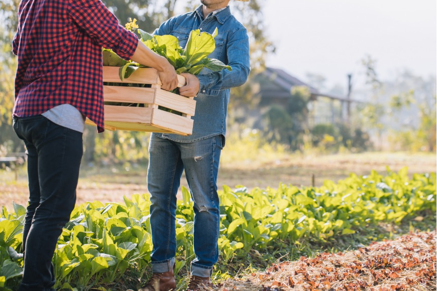
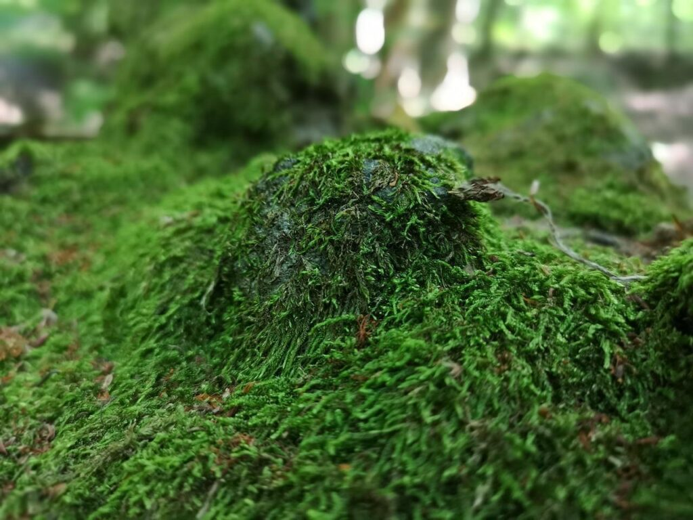
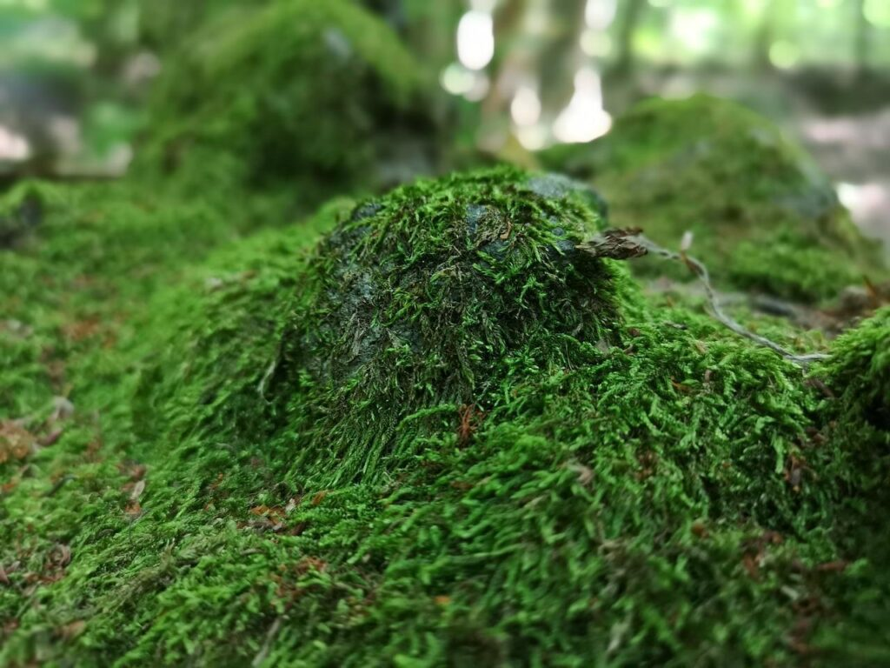
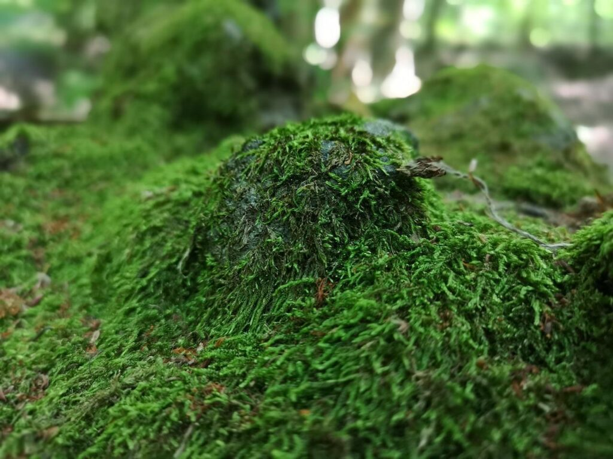

 


Dış giderler
Tarım, geniş kitlelere ulaşırken böcek ilaçları, su, aşılar gibi birçok maddi desteğe ihtiyaç duymaktadır. 2000 yılı verilerince göre Birleşik Krallık'ta 1996 yılında 2342 sterlinlik dış tarım giderleri tespit edildi. Bu da her hektar için 208 sterlin (yaklaşık 645.5 TL) anlamına gelmektedir. 2005 yılı araştırmalarına göre aynı tutarlar Amerika Birleşik Devletleri'nde 5 ilâ 16 milyar dolar arasında olduğunu gösterdi. Bu da hektar başına $30 ilâ $96 (yaklaşık 49 ilâ 159 TL) anlamına gelmektedir. Aynı ülkede hayvancılık giderleri de 714 milyon dolar tutmaktadır. Her iki araştırmaya bakıldığında tarım koruma giderlerinin kendi içinde giderilmesi yönünde çalışmalar yapılması gerektiğini bildirmektedir.
Alan dönüşümü ve İndirim
Verim amaçlı toprak kullanımından oluşturulan alan dönüşümü, insanların dünya ekosisteminin değiştirmesinin en ağır örneği; bu alan dönüşümü biyolojik çeşitliliğin kaybını hızlandırıyor. İnsanlardan kaynaklanan alan dönüşümünün toplamı %39-%50 arası değişiyor. Dünya alanların, özellikle tarım alanların %24'ünde alan dönüşümü oluşarak ekosistemin uzun vadeli kullanım imkânları ve verimliliği azalıyor. UN Fao raporu, alan dönüşümünün en sert etkeni arazi amanejmanı olduğunu ve 1.5 milyon insan alan dönüşümüne katkıda bulunduğunu belirtiyor. Alan dönüşümü, ormanların tahrip edilmesi, çölleşme, taoprak aşınması, mineral tükenmesi veya asitlenme ve tuzlanma gibi toprağın kimyasal açıdan değişmesidir.
Aşırı yosunlaşma